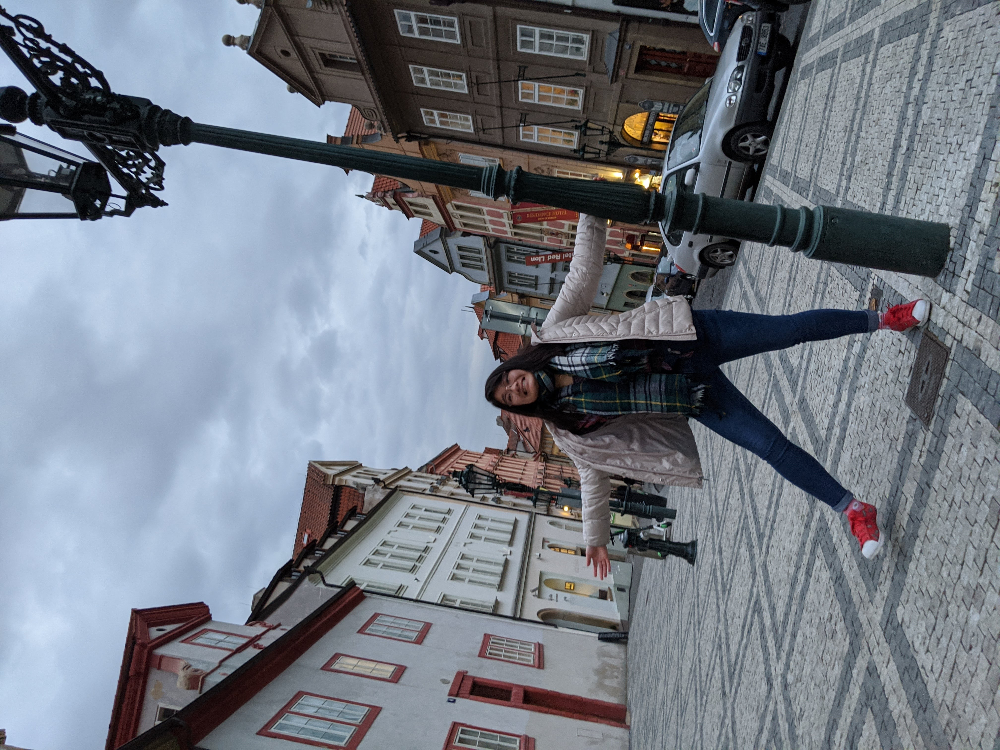
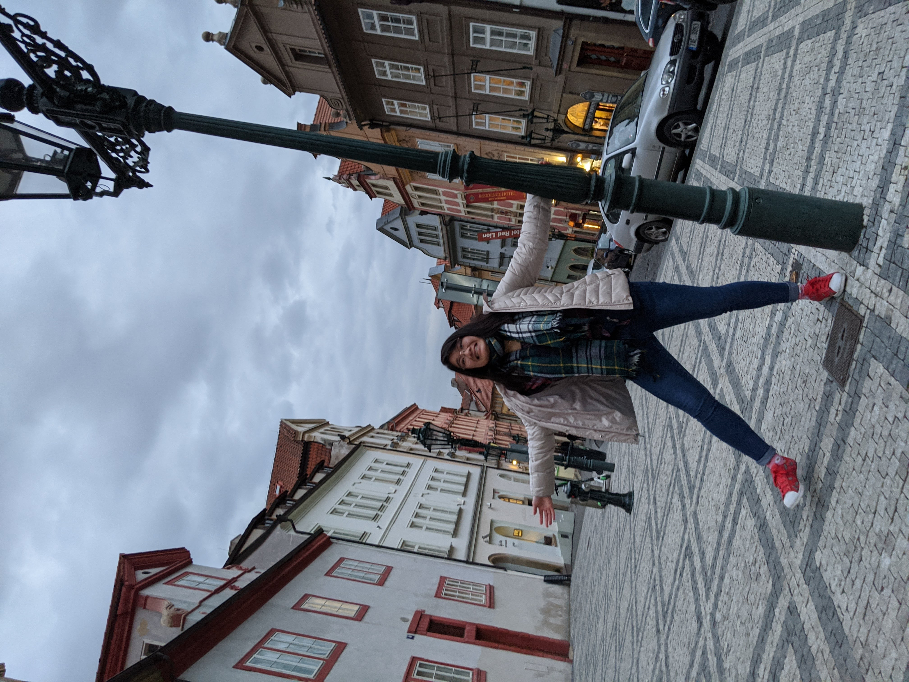

Hello!
Nice to meet you!
A little bit about me: I'm an avid space enthusiast and I love meeting new people.
About
Some of my interests include working with embedded systems and I enjoy designing hardware components as well as integrating hardware with software.
I love space! I would like to work in the space and defense industry and contribute to space exploration. Thus, I would like to work with space technology.
A little bit about me: I'm an optimist and am always cheerful in any situation.
Some of my interests is playing the guitar, reading, working out, and spending time with the fam.
Before COVID-19, I studied abroad in France and travelled all over Europe. Here are some of my photos!

 

Experience
Check out my resume!
working with other students to propose a mission concept.
I have work experience with
I've optimized applications with regards to UI/UX on these projects.
Outside of school and work, I'm constantly a part of the
and writing software to interface with a microcontroller. Our team goal is to send a liquid engine rocket into space.
I also perform research with
I've worked on designing a database for Mission Operations and various projects for STRATOS, a high altitude balloon project.
I'm extremely motivated in my work and I always aspire to perform my best.
I'm capable of learning any technologies I find interesting or that are thrown my way.